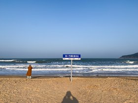
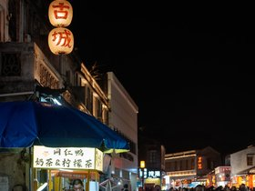
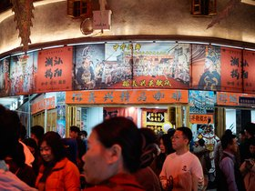

teochew/20250205-IMG_3302.jpg
teochew/20250204-IMG_3291.jpg

teochew/20250204-DSC00473.jpg

teochew/20250204-DSC00447.jpg

teochew/20250204-DSC00439.jpg
teochew/20250204-DSC00420.jpg

teochew/20250204-DSC00336.jpg

teochew/20250204-DSC00320.jpg

teochew/20250204-DSC00312.jpg

teochew/20250131-DSC00272.jpg
teochew/20250131-DSC00256.jpg

teochew/20250131-DSC00252.jpg

teochew/20250131-DSC00244.jpg

teochew/20250131-DSC00241.jpg
teochew/20250131-DSC00200.jpg
teochew/20250131-DSC00174.jpg
teochew/20250130-DSC00126.jpg